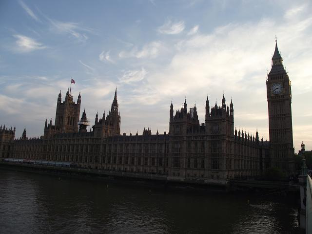

London has so many exciting places to visit that it is difficult to pick out one highlight. However, one of the most iconic is Big Ben at the Houses of Parliament. Many people mistakenly think that Big Ben refers to the clock tower but it is actually the name of the large bell inside. The Houses of Parliament are where the Government of the United Kingdom holds its meetings. There are two chambers called the House of Commons and the House of Lords.
Hong Kong
London
Chennai